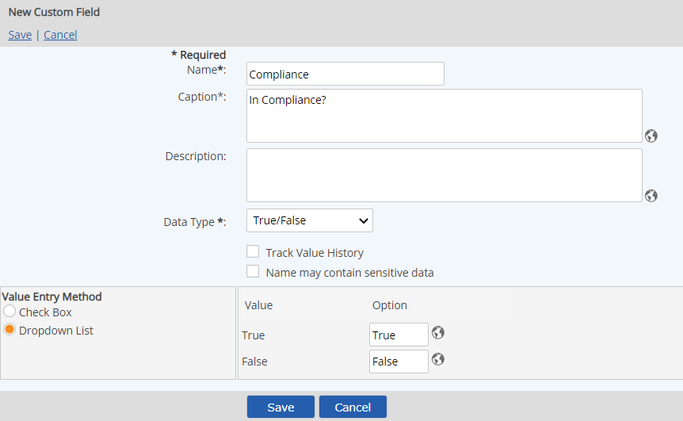

Choose the Value Entry Method: Checkbox or List
If you choose list, enter the value to display in the list to correspond with the Boolean values. You can add translated values for localization by clicking on the language symbol  .
.

True/False fields can be created to store Boolean values (fields where the value is typically true/false, yes/no or similar). The field may be presented as a checkbox or as a list selection. The list option allows you to create your own display options for True and False.
To create a True/False field:
Choose the Value Entry Method: Checkbox or List
If you choose list, enter the value to display in the list to correspond with the Boolean values. You can add translated values for localization by clicking on the language symbol  .
.

The list
To enter translated values for different languages:
Click the language symbol  next to the field.
next to the field.
In the pop-up dialog the currently active languages for users in the system are shown, as determined by the values selected in the Culture field in users' profiles. Check "Show All Cority EMS Languages" if you want to add translations for languages not currently selected by users.
Enter the value to use for each language for which you want to provide a localized translation.